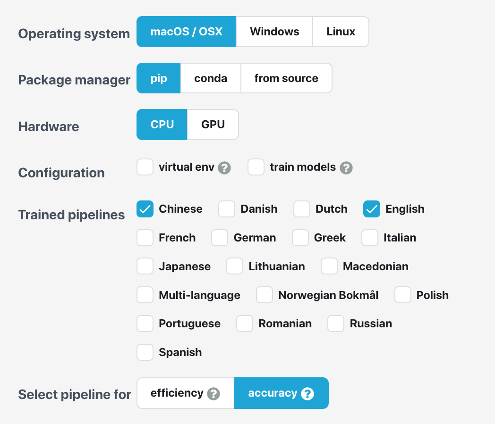

Chinese Word Segmentation¶
Natural language processing methods are connected to the characteristics of the target language.
To deal with the Chinese language, the most intimidating task is to determine a basic linguistic unit to work with.
In this tutorial, we will talk about a few word segmentation methods in python.
Segmentation using jieba¶
Before we start, if you haven’t installed the module, please install it as follows:
$ conda activate python-notes
$ pip install jieba
Check the module documentation for more detail:
jieba
import jieba
text = """
高速公路局說，目前在國道3號北向水上系統至中埔路段車多壅塞，已回堵約3公里。另外，國道1號北向仁德至永康路段路段，已回堵約有7公里。建議駕駛人提前避開壅塞路段改道行駛，行經車多路段請保持行車安全距離，小心行駛。
國道車多壅塞路段還有國1內湖-五堵北向路段、楊梅-新竹南向路段；國3三鶯-關西服務區南向路段、快官-霧峰南向路段、水上系統-中埔北向路段；國6霧峰系統-東草屯東向路段、國10燕巢-燕巢系統東向路段。
"""
text_jb = jieba.lcut(text)
print(' | '.join(text_jb))
Building prefix dict from the default dictionary ...
Dumping model to file cache /var/folders/0v/47nxlfjn26536t51wxj9j6q40000gn/T/jieba.cache
Loading model cost 0.696 seconds.
Prefix dict has been built successfully.
| 高速公路 | 局說 | ， | 目前 | 在 | 國道 | 3 | 號 | 北向 | 水上 | 系統 | 至 | 中埔 | 路段 | 車多 | 壅塞 | ， | 已回 | 堵約 | 3 | 公里 | 。 | 另外 | ， | 國道 | 1 | 號 | 北向 | 仁德 | 至 | 永康 | 路段 | 路段 | ， | 已回 | 堵 | 約 | 有 | 7 | 公里 | 。 | 建議 | 駕駛人 | 提前 | 避開 | 壅塞 | 路段 | 改道 | 行駛 | ， | 行經車 | 多 | 路段 | 請 | 保持 | 行車 | 安全 | 距離 | ， | 小心 | 行駛 | 。 |
| 國道 | 車多 | 壅塞 | 路段 | 還有國 | 1 | 內湖 | - | 五堵 | 北向 | 路段 | 、 | 楊梅 | - | 新竹 | 南向 | 路段 | ； | 國 | 3 | 三鶯 | - | 關 | 西服 | 務區 | 南向 | 路段 | 、 | 快官 | - | 霧峰 | 南向 | 路段 | 、 | 水上 | 系統 | - | 中埔 | 北向 | 路段 | ； | 國 | 6 | 霧峰 | 系統 | - | 東 | 草屯 | 東向 | 路段 | 、 | 國 | 10 | 燕巢 | - | 燕巢 | 系統 | 東向 | 路段 | 。 |
Initialize traditional Chinese dictionary
Download the traditional chinese dictionary from
jieba-tw
jieba.set_dictionary(file_path)
Add own project-specific dictionary
jieba.load_userdict(file_path)
Add ad-hoc words to dictionary
jieba.add_word(word, freq=None, tag=None)
Remove words
jieba.del_word(word)
Word segmentation
jieba.cut()returns ageneratorobjectjieba.lcut()resuts aListobject
# full
jieba.cut(TEXT, cut_all=True)
jieba.lcut(TEXT, cut_all=True
# default
jieba.cut(TEXT, cut_all=False)
jieba.lcut(TEXT, cut_all=False)
Segmentation using CKIP Transformer¶
For more detail on the installation of
ckip-transformers, please read their documentation.
pip install -U ckip-transformers
import ckip_transformers
from ckip_transformers.nlp import CkipWordSegmenter, CkipPosTagger, CkipNerChunker
When initializing the models,
levelspecifies three levels of segmentation resolution. Level 1 is the fastest while Level 3 is the most accuratedevice = 0for GPU computing.
%%time
# Initialize drivers
ws_driver = CkipWordSegmenter(level=3, device=-1)
pos_driver = CkipPosTagger(level=3, device=-1)
ner_driver = CkipNerChunker(level=3, device=-1)
CPU times: user 5.44 s, sys: 1.02 s, total: 6.46 s
Wall time: 23.8 s
We usually break the texts into smaller chunks for word segmentation.
But how we break the texts can be tricky.
Paragraph breaks?
Chunks based on period-like punctuations?
Chunks based on some other delimiters?
# Input text
text = """
高速公路局說，目前在國道3號北向水上系統至中埔路段車多壅塞，已回堵約3公里。另外，國道1號北向仁德至永康路段路段，已回堵約有7公里。建議駕駛人提前避開壅塞路段改道行駛，行經車多路段請保持行車安全距離，小心行駛。
國道車多壅塞路段還有國1內湖-五堵北向路段、楊梅-新竹南向路段；國3三鶯-關西服務區南向路段、快官-霧峰南向路段、水上系統-中埔北向路段；國6霧峰系統-東草屯東向路段、國10燕巢-燕巢系統東向路段。
"""
# paragraph breaks
text = [p for p in text.split('\n') if len(p) != 0]
print(text)
['高速公路局說，目前在國道3號北向水上系統至中埔路段車多壅塞，已回堵約3公里。另外，國道1號北向仁德至永康路段路段，已回堵約有7公里。建議駕駛人提前避開壅塞路段改道行駛，行經車多路段請保持行車安全距離，小心行駛。', '國道車多壅塞路段還有國1內湖-五堵北向路段、楊梅-新竹南向路段；國3三鶯-關西服務區南向路段、快官-霧峰南向路段、水上系統-中埔北向路段；國6霧峰系統-東草屯東向路段、國10燕巢-燕巢系統東向路段。']
# Run pipeline
ws = ws_driver(text)
pos = pos_driver(ws)
ner = ner_driver(text)
Tokenization: 100%|██████████| 2/2 [00:00<00:00, 6472.69it/s]
Inference: 100%|██████████| 1/1 [00:00<00:00, 2.25it/s]
Tokenization: 100%|██████████| 2/2 [00:00<00:00, 5507.95it/s]
Inference: 100%|██████████| 1/1 [00:00<00:00, 1.30it/s]
Tokenization: 100%|██████████| 2/2 [00:00<00:00, 6584.46it/s]
Inference: 100%|██████████| 1/1 [00:00<00:00, 2.55it/s]
When doing the word segmentation, there are a few parameters to consider in
ws_driver():use_delim: by default, ckip transformer breaks the texts into sentences using the following delimiters'，,。：:；;！!？?', and concatenate them back in the outputs.delim_set: to specify self-defined sentence delimitersbatch_sizemax_length
# Enable sentence segmentation
ws = ws_driver(text, use_delim=True)
ner = ner_driver(text, use_delim=True)
Tokenization: 100%|██████████| 2/2 [00:00<00:00, 4877.10it/s]
Inference: 100%|██████████| 1/1 [00:00<00:00, 1.28it/s]
Tokenization: 100%|██████████| 2/2 [00:00<00:00, 4928.68it/s]
Inference: 100%|██████████| 1/1 [00:00<00:00, 1.34it/s]
# Disable sentence segmentation
pos = pos_driver(ws, use_delim=False)
# Use new line characters and tabs for sentence segmentation
pos = pos_driver(ws, delim_set='\n\t')
Tokenization: 100%|██████████| 2/2 [00:00<00:00, 3328.81it/s]
Inference: 100%|██████████| 1/1 [00:00<00:00, 2.52it/s]
Tokenization: 100%|██████████| 2/2 [00:00<00:00, 7973.96it/s]
Inference: 100%|██████████| 1/1 [00:00<00:00, 2.72it/s]
A quick comparison of the results based on
jiebaandckip-transomers:
print(' | '.join(text_jb))
| 高速公路 | 局說 | ， | 目前 | 在 | 國道 | 3 | 號 | 北向 | 水上 | 系統 | 至 | 中埔 | 路段 | 車多 | 壅塞 | ， | 已回 | 堵約 | 3 | 公里 | 。 | 另外 | ， | 國道 | 1 | 號 | 北向 | 仁德 | 至 | 永康 | 路段 | 路段 | ， | 已回 | 堵 | 約 | 有 | 7 | 公里 | 。 | 建議 | 駕駛人 | 提前 | 避開 | 壅塞 | 路段 | 改道 | 行駛 | ， | 行經車 | 多 | 路段 | 請 | 保持 | 行車 | 安全 | 距離 | ， | 小心 | 行駛 | 。 |
| 國道 | 車多 | 壅塞 | 路段 | 還有國 | 1 | 內湖 | - | 五堵 | 北向 | 路段 | 、 | 楊梅 | - | 新竹 | 南向 | 路段 | ； | 國 | 3 | 三鶯 | - | 關 | 西服 | 務區 | 南向 | 路段 | 、 | 快官 | - | 霧峰 | 南向 | 路段 | 、 | 水上 | 系統 | - | 中埔 | 北向 | 路段 | ； | 國 | 6 | 霧峰 | 系統 | - | 東 | 草屯 | 東向 | 路段 | 、 | 國 | 10 | 燕巢 | - | 燕巢 | 系統 | 東向 | 路段 | 。 |
print('\n\n'.join([' | '.join(p) for p in ws]))
高速 | 公路局 | 說 | ， | 目前 | 在 | 國道 | 3號 | 北向 | 水上 | 系統 | 至 | 中埔 | 路段 | 車 | 多 | 壅塞 | ， | 已 | 回堵 | 約 | 3 | 公里 | 。 | 另外 | ， | 國道 | 1號 | 北 | 向 | 仁德 | 至 | 永康 | 路段 | 路段 | ， | 已 | 回堵 | 約 | 有 | 7 | 公里 | 。 | 建議 | 駕駛人 | 提前 | 避開 | 壅塞 | 路段 | 改道 | 行駛 | ， | 行經 | 車 | 多 | 路段 | 請 | 保持 | 行車 | 安全 | 距離 | ， | 小心 | 行駛 | 。
國道 | 車 | 多 | 壅塞 | 路段 | 還 | 有 | 國1 | 內湖 | - | 五堵 | 北向 | 路段 | 、 | 楊梅 | - | 新竹 | 南向 | 路段 | ； | 國3 | 三鶯 | - | 關西 | 服務區 | 南向 | 路段 | 、 | 快官 | - | 霧峰 | 南向 | 路段 | 、 | 水上 | 系統 | - | 中埔 | 北向 | 路段 | ； | 國6 | 霧峰 | 系統 | - | 東 | 草屯 | 東向 | 路段 | 、 | 國10 | 燕巢 | - | 燕巢 | 系統 | 東向 | 路段 | 。
# Pack word segmentation and part-of-speech results
def pack_ws_pos_sentece(sentence_ws, sentence_pos):
assert len(sentence_ws) == len(sentence_pos)
res = []
for word_ws, word_pos in zip(sentence_ws, sentence_pos):
res.append(f'{word_ws}({word_pos})')
return '\u3000'.join(res)
# Show results
for sentence, sentence_ws, sentence_pos, sentence_ner in zip(
text, ws, pos, ner):
print(sentence)
print(pack_ws_pos_sentece(sentence_ws, sentence_pos))
for entity in sentence_ner:
print(entity)
print()
高速公路局說，目前在國道3號北向水上系統至中埔路段車多壅塞，已回堵約3公里。另外，國道1號北向仁德至永康路段路段，已回堵約有7公里。建議駕駛人提前避開壅塞路段改道行駛，行經車多路段請保持行車安全距離，小心行駛。
高速(VH) 公路局(Nc) 說(VE) ，(COMMACATEGORY) 目前(Nd) 在(P) 國道(Nc) 3號(Neu) 北向(Nc) 水上(Nc) 系統(Na) 至(Caa) 中埔(Nc) 路段(Na) 車(Na) 多(D) 壅塞(VH) ，(COMMACATEGORY) 已(D) 回堵(VC) 約(Da) 3(Neu) 公里(Nf) 。(PERIODCATEGORY) 另外(Cbb) ，(COMMACATEGORY) 國道(Nc) 1號(Nc) 北(Ncd) 向(P) 仁德(Nc) 至(Caa) 永康(Nc) 路段(Na) 路段(Na) ，(COMMACATEGORY) 已(D) 回堵(VC) 約(Da) 有(V_2) 7(Neu) 公里(Nf) 。(PERIODCATEGORY) 建議(VE) 駕駛人(Na) 提前(VB) 避開(VC) 壅塞(VH) 路段(Na) 改道(VA) 行駛(VA) ，(COMMACATEGORY) 行經(VCL) 車(Na) 多(VH) 路段(Na) 請(VF) 保持(VJ) 行車(VA) 安全(VH) 距離(Na) ，(COMMACATEGORY) 小心(VK) 行駛(VA) 。(PERIODCATEGORY)
NerToken(word='高速公路局', ner='ORG', idx=(0, 5))
NerToken(word='國道3號', ner='FAC', idx=(10, 14))
NerToken(word='中埔', ner='GPE', idx=(21, 23))
NerToken(word='3公里', ner='QUANTITY', idx=(34, 37))
NerToken(word='國道1號', ner='FAC', idx=(41, 45))
NerToken(word='仁德', ner='GPE', idx=(47, 49))
NerToken(word='永康路段', ner='FAC', idx=(50, 54))
NerToken(word='7公里', ner='QUANTITY', idx=(62, 65))
國道車多壅塞路段還有國1內湖-五堵北向路段、楊梅-新竹南向路段；國3三鶯-關西服務區南向路段、快官-霧峰南向路段、水上系統-中埔北向路段；國6霧峰系統-東草屯東向路段、國10燕巢-燕巢系統東向路段。
國道(Na) 車(Na) 多(VH) 壅塞(VH) 路段(Na) 還(D) 有(V_2) 國1(Na) 內湖(Nc) -(DASHCATEGORY) 五堵(Nc) 北向(Na) 路段(Na) 、(PAUSECATEGORY) 楊梅(Nc) -(DASHCATEGORY) 新竹(Nc) 南向(Na) 路段(Na) ；(SEMICOLONCATEGORY) 國3(Na) 三鶯(Nc) -(DASHCATEGORY) 關西(Nc) 服務區(Nc) 南向(A) 路段(Na) 、(PAUSECATEGORY) 快官(Na) -(DASHCATEGORY) 霧峰(Nc) 南向(Nc) 路段(Na) 、(PAUSECATEGORY) 水上(Nc) 系統(Na) -(DASHCATEGORY) 中埔(Nc) 北向(Na) 路段(Na) ；(SEMICOLONCATEGORY) 國6(Na) 霧峰(Nc) 系統(Na) -(DASHCATEGORY) 東(Ncd) 草屯(Nc) 東向(Na) 路段(Na) 、(PAUSECATEGORY) 國10(Na) 燕巢(Nc) -(DASHCATEGORY) 燕巢(Nc) 系統(Na) 東向(VH) 路段(Na) 。(PERIODCATEGORY)
NerToken(word='國道', ner='FAC', idx=(0, 2))
NerToken(word='國3三鶯-關西服務區', ner='FAC', idx=(32, 42))
NerToken(word='中埔', ner='GPE', idx=(62, 64))
NerToken(word='國6霧峰系統', ner='FAC', idx=(69, 75))
NerToken(word='東草屯東向路段', ner='FAC', idx=(76, 83))
NerToken(word='國10燕巢-燕巢系統', ner='FAC', idx=(84, 94))
Challenges of Word Segmentation¶
text2 = [
"女人沒有她男人甚麼也不是",
"女人沒有了男人將會一無所有",
"下雨天留客天留我不留",
"行路人等不得在此大小便",
"兒的生活好痛苦一點也沒有糧食多病少掙了很多錢",
]
ws2 = ws_driver(text2)
pos2 = pos_driver(ws2)
ner2 = ner_driver(text2)
Tokenization: 100%|██████████| 5/5 [00:00<00:00, 31068.92it/s]
Inference: 100%|██████████| 1/1 [00:00<00:00, 4.31it/s]
Tokenization: 100%|██████████| 5/5 [00:00<00:00, 13477.84it/s]
Inference: 100%|██████████| 1/1 [00:00<00:00, 4.24it/s]
Tokenization: 100%|██████████| 5/5 [00:00<00:00, 18859.28it/s]
Inference: 100%|██████████| 1/1 [00:00<00:00, 4.16it/s]
# Show results
for sentence, sentence_ws, sentence_pos, sentence_ner in zip(
text2, ws2, pos2, ner2):
print(sentence)
print(pack_ws_pos_sentece(sentence_ws, sentence_pos))
for entity in sentence_ner:
print(entity)
print()
女人沒有她男人甚麼也不是
女人(Na) 沒有(VJ) 她(Nh) 男人(Na) 甚麼(Nep) 也(D) 不(D) 是(SHI)
女人沒有了男人將會一無所有
女人(Na) 沒有(VJ) 了(Di) 男人(Na) 將(D) 會(D) 一無所有(VH)
下雨天留客天留我不留
下雨天(Nd) 留(VC) 客(Na) 天(Na) 留(VC) 我(Nh) 不(D) 留(VC)
行路人等不得在此大小便
行路人(Na) 等(Cab) 不得(D) 在(P) 此(Nep) 大小便(VA)
兒的生活好痛苦一點也沒有糧食多病少掙了很多錢
兒(Na) 的(DE) 生活(Na) 好(Dfa) 痛苦(VH) 一點(Neqa) 也(D) 沒有(VJ) 糧食(Na) 多(VH) 病(Na) 少(VH) 掙(VC) 了(Di) 很多(Neqa) 錢(Na)
Tip
It is still not clear to me how we can include user-defined dictionary in the ckip-transformers. This may be a problem to all deep-learning based segmenters I think.
However, I know that it is possible to use self-defined dictionary in the ckiptagger.
If you know where and how to incorporate self-defined dictionary in the ckip-transformers, please let me know. Thanks!
Other Modules for Chinese Word Segmentation¶
You can try other modules and check their segmentation results and qualities:
ckiptagger(Probably the predecessor ofckip-transformers?)
When you play with other segmenters, please note a few important issues for determining the segmenter for your project:
Most of the segmenters were trained based on the simplified Chinese.
It is important to know if the segmenter allows users to add self-defined dictionary to improve segmentation performance.
The documentation of the tagsets (i.e., POS, NER) needs to be well-maintained so that users can easily utilize the segmentation results for later downstream projects.
Chinese NLP Using spacy¶
spacy 3+starts to support transformer-based NLP. Please make sure you have the most recent version of the module.
$ pip show spacy
Documentation of
spacy
Installation steps:
$ conda activate python-notes
$ conda install -c conda-forge spacy
$ python -m spacy download zh_core_web_trf
$ python -m spacy download zh_core_web_sm
$ python -m spacy download en_core_web_trf
$ python -m spacy download en_core_web_sm
spacyprovides a good API to help users install the package. Please set up the relevant parameters according to the API and find your own installation codes.

import spacy
from spacy import displacy
# load language model
nlp_zh = spacy.load('zh_core_web_trf') ## disable=["parser"]
# parse text
doc = nlp_zh('這是一個中文的句子')
Note
For more information on POS tags, see spaCy POS tag scheme documentation.
# parts of speech tagging
for token in doc:
print(((
token.text,
token.pos_,
token.tag_,
token.dep_,
token.is_alpha,
token.is_stop,
)))
('這', 'PRON', 'PN', 'ROOT', True, False)
('是', 'VERB', 'VC', 'cop', True, True)
('一', 'NUM', 'CD', 'dep', True, True)
('個', 'NUM', 'M', 'mark:clf', True, False)
('中文', 'NOUN', 'NN', 'nmod:assmod', True, False)
('的', 'PART', 'DEG', 'case', True, True)
('句子', 'NOUN', 'NN', 'ROOT', True, False)
' | '.join([token.text + "_" + token.tag_ for token in doc])
'這_PN | 是_VC | 一_CD | 個_M | 中文_NN | 的_DEG | 句子_NN'
## Check meaning of a POS tag
spacy.explain('NN')
'noun, singular or mass'
Visualizing linguistic features¶
# Visualize
displacy.render(doc, style="dep")
options = {
"compact": True,
"bg": "#09a3d5",
"color": "white",
"font": "Source Sans Pro",
"distance": 120
}
displacy.render(doc, style="dep", options=options)
To process multiple documents of a large corpus, it would be more efficient to work on them on batches of texts.
spaCy’s
nlp.pipe()method takes aniterableof texts and yields processedDocobjects. (That is,nlp.pipe()returns agenerator.)Use the
disablekeyword argument to disable components we don’t need – either when loading a pipeline, or during processing withnlp.pipe. This is more efficient in computing.Please read spaCy’s documentation on preprocessing.
doc2 = nlp_zh.pipe(text)
for d in doc2:
print(' | '.join([token.text + "_" + token.tag_ for token in d]) + '\n')
高速_JJ | 公路_NN | 局說_VV | ，_PU | 目前_NT | 在_P | 國道_NN | 3_OD | 號_NN | 北向_NN | 水上_NR | 系統_NN | 至_CC | 中埔_NR | 路段_NN | 車多_AD | 壅塞_VV | ，_PU | 已_AD | 回_VV | 堵約_AD | 3_CD | 公里_M | 。_PU | 另外_AD | ，_PU | 國道_NN | 1_OD | 號_NN | 北向_NN | 仁德_NR | 至_CC | 永康_NR | 路段_NN | 路段_NN | ，_PU | 已_AD | 回_VV | 堵約_AD | 有_VE | 7_CD | 公里_M | 。_PU | 建議_VV | 駕駛人_NN | 提前_AD | 避開_VV | 壅塞_JJ | 路段_NN | 改道_VV | 行駛_VV | ，_PU | 行經_VV | 車_NN | 多_VA | 路段_NN | 請_VV | 保持_VV | 行車_NN | 安全_JJ | 距離_NN | ，_PU | 小心_AD | 行駛_VV | 。_PU
國道_NN | 車多_AD | 壅塞_VA | 路段_NN | 還_VV | 有_VE | 國_NN | 1內湖_NR | -_PU | 五_NR | 堵北_NR | 向_JJ | 路段_NN | 、_PU | 楊梅_NR | -_PU | 新竹_NR | 南向_JJ | 路段_NN | ；_PU | 國3三_NR | 鶯_NR | -_PU | 關西_NR | 服務_NN | 區南_NN | 向_JJ | 路段_NN | 、_PU | 快官_NR | -_PU | 霧峰_NR | 南向_JJ | 路段_NN | 、_PU | 水上_NR | 系統_NN | -_PU | 中_NR | 埔北_NR | 向_JJ | 路段_NN | ；_PU | 國6_OD | 霧峰_NR | 系統_NN | -_PU | 東草_NR | 屯東_NR | 向_JJ | 路段_NN | 、_PU | 國10_NR | 燕巢_NR | -_PU | 燕巢_NR | 系_NN | 統東_NN | 向_JJ | 路段_NN | 。_PU
Tip
Please read the documentation of spacy very carefully for additional ways to extract other useful linguistic properties.
You may need that for the assignments.
Conclusion¶
Different segmenters have very different behaviors.
The choice of a proper segmenter may boil down to the following crucial questions:
How do we evaluate the segmenter’s performance?
What is the objective of getting the word boundaries?
What is a word in Chinese?